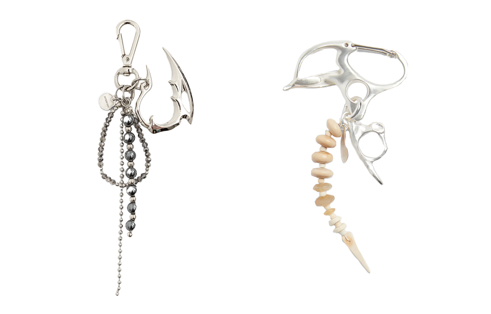

The Brand
Hyein Seo explores fashion with a contemporary streetwear edge, often expressing a stretched transition from teen to adulthood as collections feature text and slogans drawing on counterculture. Another youthful mind set expressed through her label is it’s unisex approach to clothing. Providing relaxed, witty style to men and women, of celebrity status or millennial minds alike.
In an interview from 2017 by SHOWStudio Hyein Seo and Jino Lee talk about the brand first collections and how Hyein and Jino never had the intention of having their own brand like most of their classmates at the Royal Academy in Antwerp.
In the interview Anna Trevelyan mentions that she thinks one of the cool thing about the brand is that even it is such a new brand by such young designers the brands apparel is immediately identified and everyone wants to be part of the 'Hyein Seo' world.
Since their debut in 2014 with their fall/winter collection 'Fear Eats The Soul' Hyein Seo has only been growing as a brand with as of now 17 collections.
Hyein Seo has also released a handful of accessories like headwear and keychains. They keep the overall vibe of the collections with a tribal twist to the keychains, the silver color and the beads together with the organic, sharp bone like structure makes the perfect identifiable accessory for the recent Hyein Seo collections.
